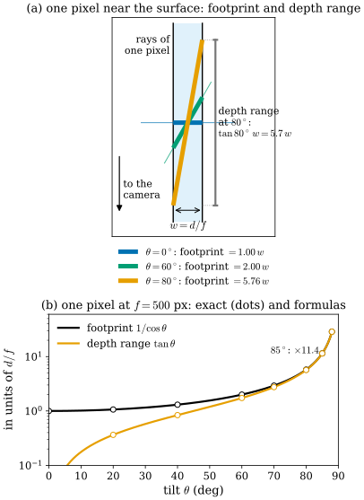
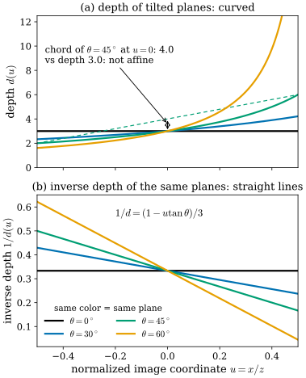

30.4 Depth Maps as Parametrized Surfaces
Goals
- depth map의 back-projection \(X(u, v) = d(u, v)\,\mathsf{K}^{-1}(u, v, 1)^{\mathsf T}\)을 parametrized surface로 보고, 그것이 regular하지 않은 곳(depth 불연속)과 silhouette의 뜻을 설명할 수 있다.
- first fundamental form으로 한 픽셀이 덮는 surface의 넓이를 depth, focal length, off-axis 각, 시선과 normal 사이의 각으로 정확히 쓰고, grazing angle에서 무엇이 불안정해지는지(그리고 무엇은 아닌지) 수치로 말할 수 있다.
- 평면의 inverse depth가 픽셀 좌표에 대해 affine이라는 것과 second fundamental form이 inverse depth의 Hessian에 비례한다는 것을 유도하고, 그것으로 smoothness prior가 어떤 모양을 공짜로 두는지 설명할 수 있다.
- depth의 Laplacian이 mean curvature가 아니라는 것을 정확히 구분할 수 있다.
Prerequisites
- Section 0.3: parametrization(Definition 0.3.1), normal(Definition 0.3.3), first fundamental form과 넓이 요소(Definition 0.3.5, (0.3.3))
- Section 0.4: second fundamental form의 coefficient와 \(K\), \(H\)의 좌표 공식 (0.4.2), graph의 원점에서 \(W_p\) = Hessian(Example 0.4.4)
- Section 29.3: 투영 \(\varphi\)와 그 Jacobian \(J\), \(\ker J\) = ray 방향, Mip-Splatting filter의 크기 \(d/f\)(Dilation and Filters)
- Section 30.3: normal consistency의 depth normal (30.3.8), depth distortion의 좌표 \(m\)(\(1/z\)에 affine)
Motivation
Section 30.3에서 두 번 미뤄 둔 대상이 있다. normal consistency는 rendering한 depth map을 3D로 되돌린 점들의 finite difference로 normal을 계산했고, depth distortion은 depth 대신 \(1/z\)에 affine인 좌표로 거리를 쟀다. 둘 다 depth map을 하나의 surface로 다룬다는 생각 위에 서 있다. 실제로 depth map은 Tour Section 0.3의 뜻 그대로 parametrized surface이고, 그 parameter는 픽셀 좌표 \((u, v)\)다. texture의 UV 좌표가 surface를 그리듯이 이미지의 픽셀 좌표가 장면의 보이는 부분을 그린다.
이 관점은 3D vision의 여러 경험칙을 설명한다. 이 절은 네 질문에 답한다.
- depth map은 언제 regular surface이고, silhouette에서는 무슨 일이 일어나는가?
- 한 픽셀은 surface의 넓이를 얼마나 덮는가? grazing angle에서 depth와 normal은 정말 불안정한가?
- 왜 많은 방법이 depth가 아니라 inverse depth(disparity)로 smoothness를 거는가?
- depth의 Laplacian은 mean curvature인가?
A Depth Map Is a Parametrized Surface
픽셀 \((u, v)\)의 depth를 \(d(u, v)\)라 하면, 그 픽셀이 보는 점은
이다. 이것이 back-projection이고, 2DGS 공식 코드의 depths_to_points도 같은 계산을 한다(depthmap * rays_d, \(r\)의 셋째 성분이 \(1\)이므로 z-depth). \(X\)는 픽셀 평면의 영역에서 \(\R^3\)으로 가는 map이므로 Tour의 parametrization 후보다. 조건은 \(X_u \times X_v \neq 0\)이다.
Proposition 30.4.1 (a smooth depth map is always regular). \(d\)가 \((u, v)\) 근처에서 \(C^1\)이고 양수이면
이다. 따라서 \(X_u \times X_v \neq 0\)이고 \(X\)는 그 근처에서 regular하다. 서로 다른 픽셀은 서로 다른 ray 위의 점이므로 \(X\)는 일대일이기도 하다.
Derivation. \(X_u = d_u\,r + d\,r_u\), \(X_v = d_v\,r + d\,r_v\)이고 \(r_u = (1/f_x, 0, 0)\), \(r_v = (0, 1/f_y, 0)\)이다. cross product를 전개하면 \(X_u \times X_v = d\,d_u\,(r \times r_v) + d\,d_v\,(r_u \times r) + d^2\,(r_u \times r_v)\)이다(\(r \times r = 0\)). 앞의 두 항은 \(r\)에 수직이므로 \(r\)과의 inner product에서 사라지고, \(r_u \times r_v = e_3/(f_xf_y)\), \(\inner{e_3}{r} = 1\)이다. 결과는 \(d_u, d_v\)에 무관하다.
놀라운 것은 결과가 depth의 기울기와 무관하다는 점이다. depth가 어떻게 변하든 매끄럽기만 하면 back-projection은 퇴화하지 않는다. 그러므로 regular하지 않은 곳은 \(d\) 자체가 매끄럽지 않은 곳뿐이다. 장면의 surface가 smooth하다면 그런 곳은 앞의 물체와 뒤의 배경이 갈리는 depth 불연속이다(surface 자체에 모서리가 있으면 그곳에서도 \(d\)가 꺾인다). depth 불연속을 사이에 둔 두 픽셀은 공간에서 멀리 떨어진 두 surface 위에 있다.
![위아래 세 패널. (a) 가로 96, 세로 72 픽셀의 depth map 영상. 배경은 위쪽이 노랑(먼 곳, depth 약 5.6), 아래쪽이 청록(가까운 곳, 약 3.1)으로 변하고, 가운데 오른쪽에 짙은 보라색 원(sphere, depth 약 1.9–2.4)이 있다. 원의 가장자리 픽셀들이 주황 점으로 표시되어 있고, v = 32인 행에 흰 점선(row for (b))이 있다. 오른쪽에 depth 색 막대. (b) 그 행을 위에서 본 그림. 가로축 x, 세로축 depth z. 아래쪽 밖의 카메라에서 회색 ray들이 부채꼴로 올라간다. z = 4.1의 가로줄 위에 회색 점들(배경)이 있는데 가운데는 비어 있고 점선으로 occluded라고 적혀 있다. z = 1.9–2.3에 검은 점들이 아래로 불룩한 호(sphere의 앞면)를 이루고, 그 호를 포함하는 점선 원이 sphere 전체다. 호의 양 끝에서 배경 점까지 주황 굵은 선분 두 개가 거의 ray를 따라 올라가며, depth jump: a naive mesh adds this edge라는 주석이 있다. 호에는 smooth part: a regular curve라는 주석이 있다. (c) 같은 장면의 3D 그림. 회색 격자의 기울어진 배경 평면, 그 앞의 검은 격자 sphere 조각, sphere 가장자리에서 평면까지 퍼지는 주황 반투명 cone 모양 면, 오른쪽 아래의 검은 점 camera.](figures/fig-30-4-1-backprojection.svg)
Figure 30.4.1을 (a), (b), (c) 순서로 따라가 보자. (a)의 위에서 아래로 갈수록 배경 depth가 줄어드는 것은 배경 평면이 아래쪽에서 카메라에 가까이 기울어 있기 때문이다. 흰 점선의 행 하나를 골라 그 픽셀들을 되돌리면 (b)가 된다. 픽셀은 왼쪽부터 회색(배경) → 검정(sphere) → 회색 순서로 이어지고, 각 점은 자기 픽셀의 ray 위에 놓인다. sphere 위에서는 이웃 픽셀의 점들이 촘촘히 이어져 곡선이 되지만, 배경에서 sphere로 넘어가는 두 곳에서는 이웃한 두 점이 같은 ray 근처에서 2 가까이 떨어져 있다. 이 둘을 이으면 주황 edge가 되고, 그 사이의 배경(위쪽 점선)과 sphere의 뒷면(점선 원의 위쪽)은 depth map에 아예 없다. (c)는 이 일을 모든 행과 열에서 한 것이다. (b)의 두 주황 edge가 silhouette을 한 바퀴 돌며 모여 cone 모양의 주황 면이 된다. depth map을 그대로 mesh로 바꾸면 이런 “고무막”이 생기므로, 실제로는 이웃 픽셀의 depth 차이가 클 때 면을 끊는다. TSDF fusion(Section 30.1)은 여러 시점의 depth를 합쳐 이 문제를 피한다.
The First Fundamental Form Is the Pixel Footprint
Tour (0.3.3)에서 \(\sqrt{EG - F^2}\,du\,dv\)는 parameter 평면의 작은 칸이 surface 위에서 차지하는 넓이였다. 여기서 parameter 평면은 이미지이고 칸 하나는 픽셀 하나다. 그러므로 \(\sqrt{EG - F^2}\)는 한 픽셀이 덮는 surface의 넓이, 곧 pixel footprint다.
Proposition 30.4.2 (pixel footprint). Proposition 30.4.1의 상황에서
이다. \(\alpha\)는 off-axis 각, \(\theta\)는 normal과 ray 사이의 각, \(\ell = d/\cos\alpha\)는 ray를 따른 거리다.
Derivation. \(\sqrt{EG - F^2} = \abs{X_u \times X_v}\)이고(Tour Section 0.3), \(X_u \times X_v = \abs{X_u \times X_v}\,\mathbf{N}\)이다. 양변과 \(\hat r = r/\abs{r}\)의 inner product를 취하면 \(\abs{X_u \times X_v}\,\abs{\cos\theta} = \abs{\inner{X_u \times X_v}{\hat r}} = d^2/(f_xf_y\abs{r})\)이다((30.4.2)). \(1/\abs{r} = \cos\alpha\)를 넣으면 첫 식, \(d = \ell\cos\alpha\)를 넣으면 둘째 식이다.
식의 세 인수를 하나씩 읽자. \(d^2/(f_xf_y)\)는 카메라를 정면으로 보는 평면에서의 footprint로, 한 변이 \(d/f\)인 정사각형이다. depth \(2\) m, \(f = 500\) px이면 \(4\) mm × \(4\) mm다(Exercise 30.4.1). \(1/\abs{\cos\theta}\)는 surface가 시선에 대해 기울어진 만큼 footprint가 늘어나는 비율이다. \(\cos\alpha\)는 off-axis 효과인데, z-depth로 쓰면 \(\cos\alpha\) 하나, ray 거리로 쓰면 \(\cos^3\alpha\)가 된다. 한 픽셀이 보는 solid angle이 off-axis에서 \(\cos^3\alpha\)로 줄기 때문이다.
footprint의 모양도 first fundamental form이 정한다. 영상 중심에서 surface가 기운 방향의 tangent vector는 길이가 \(1/\cos\theta\)배로 늘어나고 그에 수직인 방향은 그대로이므로, footprint는 기울어진 방향으로 긴 직사각형(작은 ellipse로 보면 장단축 비 \(1/\cos\theta\))이다. Tour Figure 0.3.3의 ellipse를 이미지 쪽에서 본 것이다. 그래픽스의 mipmap과 anisotropic filtering은 바로 이 Jacobian(픽셀 좌표에서 texture 좌표로 가는 map의 미분)으로 sampling 크기를 고른다. Mip-Splatting [Yu24]의 3D filter가 쓰는 \(d/f\)(Section 29.3)는 정면 footprint의 한 변이고, 이 filter는 isotropic이므로 \(1/\cos\theta\)의 늘어남은 반영하지 않는다.

Figure 30.4.2의 (a)를 보자. 띠의 폭은 정면 footprint \(w = d/f\)다. 파란 수평선(정면)은 띠를 폭 그대로 자르고, 초록과 주황으로 기울일수록 띠를 비스듬히 길게 자른다. 이 길이가 \(w/\cos\theta\)다. 동시에 주황 평면은 한 픽셀 안에서 depth가 \(5.7w\)나 변한다. 이 픽셀에 depth를 하나만 적어야 한다면 그 값은 footprint의 어느 점을 고르느냐(처음 닿는 점, 평균, median)에 따라 \(w\tan\theta\)만큼 달라진다. 2DGS가 expected depth와 median depth를 고르게 하는 것(Section 30.3)도 이 선택이다. (b)는 이 두 양이 \(80^\circ\) 근처부터 폭발적으로 커지는 것을 보여 준다.
What actually breaks at grazing angles
“grazing angle에서는 depth와 normal이 불안정하다”는 말을 나누어 보자. depth 쪽은 위에서 본 대로 분명하다. 그러면 depth map에서 finite difference로 계산한 normal도 grazing에서 나빠지는가? 영상 중심 픽셀의 normal을 2DGS의 depth_to_normal처럼 네 이웃 픽셀 \((u, v) = (\pm1, 0), (0, \pm1)\)의 점으로 central difference해 계산하자. 평면은 이미지의 가로축을 축으로 \(\theta\)만큼 기울여서 depth가 세로 방향으로만 변하게 하고, depth에 두 종류의 오차를 넣는다. normal의 오차는 두 성분으로 나누어 본다. 기울기 방향의 cross-section 안에서 normal이 도는 성분(along the tilt)과, 기울기 방향을 축으로 도는 성분(across the tilt)이다. 2D cross-section으로만 계산하면 앞의 것만 보인다.
![위아래 두 그래프, 같은 가로축 tilt θ(0부터 90도), 세로축 rms normal error(deg). (a) constant depth noise: 굵은 파란 곡선 total이 θ = 0에서 약 5.7도로 가장 높고 90도로 갈수록 줄어 0이 된다. 파란 파선 along the tilt는 4.05도에서 cos²θ 꼴로 빨리 줄고, 파란 점선 across the tilt는 4.05도에서 cos θ 꼴로 천천히 준다. 흰 원 Monte Carlo 점들이 굵은 곡선 위에 있다. (b) depth read ±1/2 px off the pixel center: 굵은 주황 곡선 total이 0도에서 0으로 시작해 커지다가 80도 이후 약 11.7도에서 평평해진다. 주황 파선 along the tilt는 45도에서 약 5.9도로 가장 높고 90도에서 0이 되며, 주황 점선 across the tilt는 sin θ 꼴로 계속 커진다. 흰 원 점들은 굵은 곡선 위에 있고 70도 이후 조금 위(약 12도)에 있다.](figures/fig-30-4-3-fd-normal-noise.svg)
depth_to_normal)로 계산한 Monte Carlo(\(\theta\)마다 40000회)의 rms 각 오차. 읽는 법: (a)는 각 픽셀의 depth에 크기가 일정한 잡음(표준편차 \(\sigma = 0.02\%\) of \(d\))을 더한 경우, (b)는 각 픽셀의 depth를 픽셀 중심이 아니라 픽셀 안의 무작위 위치(가로·세로 각각 \(\pm\tfrac12\) px의 uniform distribution)에서 읽고 픽셀 중심의 ray로 되돌린 경우(aliasing이나 미세한 어긋남의 모형)다. 굵은 선은 전체 오차의 1차 근사 공식, 파선은 기울기 방향 cross-section 안의 성분(2D cross-section이 보는 것), 점선은 기울기 방향을 축으로 도는 성분이고, 흰 원은 전체 오차의 Monte Carlo다. (a)의 \(k = \sigma f/(\sqrt2\,d) = 4.05^\circ\)이다. 볼 것: (a)의 전체 오차는 카메라를 정면으로 볼 때 가장 크고(\(\sqrt2\,k = 5.73^\circ\)) \(80^\circ\)에서 \(0.71^\circ\)로 준다. cross-section 성분은 \(\cos^2\theta\)로, 다른 성분은 \(\cos\theta\)로 줄어든다. (b)는 반대다. 정면에서 \(0\)이고 grazing으로 갈수록 커져 \(1/\sqrt{24}\) rad \(= 11.7^\circ\)에 가까워진다(Monte Carlo는 2차 효과로 \(85^\circ\)에서 \(12.0^\circ\)). cross-section 성분만 보면 \(45^\circ\)에서 최대(\(5.85^\circ\))이고 양 끝에서 \(0\)이어서, 2D 계산은 grazing에서의 증가를 놓친다. 어느 쪽도 발산하지는 않는다. 본문과의 연결: 아래 문단과 상자.Figure 30.4.3의 (a)는 의외로 보일 수 있다. 정면에서 오차가 가장 크다. depth 잡음 \(\delta d\)는 점을 자기 ray를 따라 옮긴다. normal을 바꾸는 것은 그 이동 가운데 surface에 수직인 성분, 약 \(\delta d\cos\theta\)뿐이다. 기울기 방향으로 이웃한 두 점 사이의 거리(baseline)는 \((2d/f)/\cos\theta\)로 늘어나므로 그 방향의 각 오차는 \(\cos^2\theta\)에 비례하고(파선), 기울기와 수직인 방향의 baseline은 \(2d/f\) 그대로이므로 그 방향의 각 오차는 \(\cos\theta\)에 비례한다(점선). surface가 기울수록 ray가 surface를 따라 눕기 때문에, 같은 크기의 depth 잡음이 surface를 덜 흔든다. (b)에서는 잡음이 depth 기울기를 탄다. 위치가 \(\delta\) 픽셀 어긋나면 depth가 \((d/f)\tan\theta\cdot\delta\)만큼 틀리고, 그 수직 성분 \((d/f)\sin\theta\cdot\delta\)가 기울기와 수직인 방향의 짧은 baseline \(2d/f\)를 \(\sin\theta\cdot\delta/2\) rad만큼 기울인다. 그래서 점선 성분이 \(\sin\theta\)로 자라 grazing에서 전체 오차를 지배한다. cross-section 안의 성분은 늘어난 baseline 때문에 다시 \(\cos\theta\)가 곱해져 \(\sin\theta\cos\theta\)가 된다(파선).
Planes Have Affine Inverse Depth
이제 가장 단순한 surface, 평면을 depth map으로 보자. 평면이 카메라 중심을 지나지 않으면 \(\inner{n}{X} = c\) (\(c \neq 0\))로 쓸 수 있다.
Proposition 30.4.3 (planes are exactly the surfaces with affine inverse depth). 평면 \(\inner{n}{X} = c\) (\(c \ne 0\))의 inverse depth는
로 \((u, v)\)의 affine function이다(\(\bar x = (u - c_x)/f_x\), \(\bar y = (v - c_y)/f_y\)). 거꾸로 \(\rho = au + bv + e\)이면 모든 \(X(u, v)\)가 평면 \(\inner{n}{X} = 1\), \(n = (af_x,\ bf_y,\ e + ac_x + bc_y)\) 위에 있다. depth \(d = c/\inner{n}{r}\) 자체는 \(n_x = n_y = 0\)(정면 평면)일 때만 affine이다.
Derivation. \(X = d\,r\)을 \(\inner{n}{X} = c\)에 넣으면 \(d\inner{n}{r} = c\)이고, \(r\)은 \((u, v)\)의 affine function이다. 거꾸로 \(\inner{n}{X} = \inner{n}{r}/\rho\)에 위의 \(n\)을 넣으면 분자가 \(au + bv + e = \rho\)가 되어 \(1\)이다.

Figure 30.4.4의 두 패널을 같은 \(u\)에서 위아래로 비교해 보자. (a)의 곡선들은 오른쪽 끝에서 급히 올라간다. 평면이 기울어 그쪽 ray가 평면과 거의 나란해지기 때문이다. (b)에서는 같은 평면들이 곧은 직선이다. 이것이 stereo와 multi-view stereo에서 slanted-plane 가정을 disparity(inverse depth)로 쓰는 이유이고, Section 30.3의 depth distortion 좌표 \(m\)과 Mip-NeRF 360 [Barron22]이 ray 위의 sample을 disparity에 대해 고르게 두는 것이 이 좌표와 잘 맞는 이유다(앞의 것은 사실, 뒤의 연결은 해석이다).
Normal and Second Fundamental Form from Inverse Depth
Proposition 30.4.3의 계산을 한 점 근처로 옮기면 normal과 second fundamental form이 inverse depth의 1차, 2차 미분으로 정확히 나온다.
Proposition 30.4.4 (normal and second fundamental form of a depth map). \(\rho = 1/d\)가 \(C^2\)이고, 점 \(X = X(u, v)\)에서의 unit normal을 \(\mathbf{N}\)이라 하자. 그러면
이고, 픽셀 좌표 \((u, v)\)에 대한 second fundamental form의 coefficient는
이다. \(\inner{\mathbf{N}}{X}\)는 그 점의 tangent plane과 카메라 중심 사이의 signed distance이고, silhouette에서 \(0\)이 된다. \(\mathbf{N}\)은 어느 쪽을 골라도 된다. \(\mathbf{N}\)을 \(-\mathbf{N}\)으로 바꾸면 \(L, M, N\)과 \(\inner{\mathbf{N}}{X}\)가 함께 부호를 바꾸므로 (30.4.6)은 그대로 성립한다. (30.4.5)의 vector를 \(v\)라 하면 \(\inner{v}{X} = 1\)이므로, \(v\)는 카메라에서 멀어지는 쪽을 향하고 \(\inner{v}{Y} = 1\)이 그 점의 tangent plane이다.
Derivation. 고정된 vector \(n_0\)에 대해 \(g(u, v) = \inner{n_0}{X}\,\rho = \inner{n_0}{r}\)은 affine function이므로 1차 미분은 상수이고 2차 미분은 \(0\)이다. \(n_0 = \mathbf{N}\)(그 점의 normal)으로 두고 그 점에서 미분하자. \(\inner{\mathbf{N}}{X_u} = 0\)이므로 \(g_u = \inner{\mathbf{N}}{X}\rho_u = \inner{\mathbf{N}}{r_u} = N_x/f_x\)이다. 같은 식으로 \(N_y = f_y\inner{\mathbf{N}}{X}\rho_v\), 그리고 \(g = \inner{\mathbf{N}}{X}\rho = \inner{\mathbf{N}}{r}\)에서 \(N_z\)가 나온다. 공통 인수 \(\inner{\mathbf{N}}{X}\)를 빼면 (30.4.5)다. 2차 미분은 \(g_{uu} = \inner{\mathbf{N}}{X_{uu}}\rho + 2\inner{\mathbf{N}}{X_u}\rho_u + \inner{\mathbf{N}}{X}\rho_{uu} = 0\)이고 가운데 항이 \(0\)이므로 \(L = \inner{X_{uu}}{\mathbf{N}} = -\inner{\mathbf{N}}{X}\rho_{uu}/\rho\)다. \(M\), \(N\)도 같다.
(30.4.5)은 \((\rho, \rho_u, \rho_v)\)에 대해 linear하다. 그래서 monocular normal network의 예측 \(\hat n\)과 depth를 맞추는 depth–normal consistency는 “\(\hat n\)과 (30.4.5)의 vector가 평행하다”는, \(\rho\)에 대한 linear한 조건으로 쓸 수 있다. normal map에서 depth를 적분해 내는 normal integration이 linear system이 되는 이유이기도 하다. 반대로 아무 normal map이나 어떤 depth map의 normal이 되는 것은 아니다. Section 30.3의 상자에서 본 적분 가능성 조건이 필요하다. 이 문단은 특정 논문이 아니라 위 식에서 바로 나오는 일반론이다.
(30.4.6)은 더 중요하다. inverse depth의 Hessian matrix는 픽셀 좌표로 쓴 second fundamental form에 정확히 비례하고, 비례 상수 \(-d\inner{\mathbf{N}}{X}\)는 silhouette이 아닌 한 \(0\)이 아니다. 그러므로 어떤 영역에서 \(\Hess\rho = 0\)이면 그곳의 second fundamental form이 \(0\), 곧 평면이다(Proposition 30.4.3의 국소판). 다만 curvature 자체를 얻으려면 Tour (0.4.2)처럼 first fundamental form (30.4.3)으로 나누어야 한다. \(\abs{\Hess\rho}\)를 그대로 쓰는 prior는 이미지 방향을 모두 같은 무게로 재는 “이미지 좌표의 second fundamental form”을 점마다의 weight \(1/\abs{d\inner{\mathbf{N}}{X}}\)로 벌하는 것이다(해석이다).
The Laplacian of depth is not mean curvature
depth의 Laplacian을 curvature처럼 쓰는 경우가 있으므로 정확히 구분하자. orthographic camera에서 depth를 높이 함수 \(z = h(x, y)\)로 보면, \(\mathbf{N} = (-h_x, -h_y, 1)/\sqrt{1 + \abs{\grad h}^2}\)(카메라에서 멀어지는 쪽)에 대해
이다(이 study set의 부호. 원점에서 \(h = \tfrac12(ax^2 + by^2)\)이면 \(H = (a + b)/2\)로 Tour Exercise 0.4.2와 같다). \(\abs{\grad h}\)가 작을 때만 \(H \approx \tfrac12\Delta h\)이다. 예를 들어 \(h = \tfrac12x^2 + 0.3y^2 + kx\)의 원점에서 \(H/(\tfrac12\Delta h)\)는 기울기 \(k = 0.1\)이면 \(0.989\)지만 \(k = 1\)이면 \(0.486\)이다. perspective camera에서는 더 어긋난다. \(45^\circ\) 평면은 \(H = 0\)인데도 depth의 2차 차분이 \(0\)이 아니다(\(d = 3\), \(f = 500\) px이면 영상 중심에서 \(d_{uu} = 2.4 \times 10^{-5}\)/px², 반면 \(\rho_{uu} = 0\)). Section 30.2의 \(\Delta f = -2H\)는 SDF라는 특별한 함수의 3차원 Laplacian에 대한 정확한 식이고, depth map의 2차원 Laplacian에는 그런 관계가 없다.
Smoothness Priors and What They Leave Alone
depth를 추정하거나 denoise할 때 쓰는 smoothness prior는 “어떤 모양에 비용이 \(0\)인가”로 분류하면 기하가 보인다.
- 1차(TV) prior on depth \(\sum\abs{\grad d}\): 비용이 \(0\)인 것은 depth가 일정한 surface, 곧 정면 평면뿐이다. L1이라 단조로운 profile에서는 전체 높이 차만 벌하므로 경사와 계단을 구별하지 않고, 잡음이 있으면 기울어진 평면을 정면 평면 조각의 계단(staircase)으로 바꾸는 경향이 있다. weight를 키우면 높이 차 자체를 없애 정면 평면 하나로 간다.
- 2차 prior on depth \(\sum\abs{\partial^2 d}\): 비용이 \(0\)인 것은 depth가 \((u, v)\)의 affine function인 surface다. Proposition 30.4.3에 의해 이것은 정면 평면을 빼면 평면이 아니다. 2D cross-section에서는 parabola다(Exercise 30.4.3).
- 2차 prior on inverse depth \(\sum\abs{\partial^2\rho}\): 비용이 \(0\)인 것은 모든 방향의 평면이다. (30.4.6)에 의해 이 prior는 이미지 좌표의 second fundamental form을 (점마다 weight를 곱해) 벌한다.
![위아래 두 그래프. (a) 가로축 u(-0.5부터 0.5), 세로축 distance to the true plane(-1.5부터 1.25). 왼쪽 위에 범례가 있다. 회색 점(noisy depth)이 0 근처에 흩어져 있다. 주홍 직선(TV on depth)은 왼쪽 아래 -1.4에서 오른쪽 위 0.95로 올라가는 비스듬한 직선이고, 파란 곡선(2nd order on depth)은 양 끝에서 위로 휘고 가운데에서 살짝 아래로 처진 활 모양이며, 초록 곡선(2nd order on inverse depth)은 0에 거의 붙어 있다. 범례에 rms 0.712, 0.053, 0.008. (b) log-log 그래프, 가로축 regularization weight λ(0.3부터 1000), 세로축 rms distance. 주홍(TV)은 λ와 함께 올라가 0.71에서 멈추고, 파랑(2nd order on depth)과 초록(2nd order on inverse depth)은 λ = 0.3에서 0.012로 같이 시작한다. 파랑은 λ = 1 근처에서 가장 낮았다가 λ가 커지며 0.19까지 올라가고, 초록은 λ가 커질수록 계속 내려가 0.008에 이른다. 회색 점선 noise level이 0.043에 있다.](figures/fig-30-4-5-smoothness-priors.svg)
Figure 30.4.5의 (a)에서 세 곡선은 같은 잡음 섞인 관측(회색)에서 출발했다. 주홍은 \(u\)를 따라 곧게 벌어지는 직선이다. 거리가 \(u\)에 비례한다는 것은 복원된 surface가 다른 기울기의 평면, 곧 정면 평면이라는 뜻이다. 파랑은 가운데가 처지고 양 끝이 들린 활이다. depth를 \(u\)의 직선에 가깝게 만들었더니 3D에서는 휜 곡선이 된 것이다. 초록은 \(0\)에 붙어 있다. (b)로 가면 이 차이가 \(\lambda\)를 바꿔도 유지된다. 정규화를 세게 할수록 각 prior는 자기가 공짜로 두는 모양으로 수렴한다. 그 모양이 참 surface와 같은 종류인 것은 초록뿐이다.
Summary
- back-projection \(X = d\,\mathsf{K}^{-1}(u, v, 1)^{\mathsf T}\)은 \(\inner{X_u \times X_v}{r} = d^2/(f_xf_y)\)를 만족하므로 \(d\)가 smooth한 곳에서는 언제나 regular하다. regular하지 않은 곳은 depth 불연속이고, silhouette은 투영 \(\varphi|_S\)가 rank를 잃는 fold다.
- 한 픽셀의 footprint는 \(\sqrt{EG - F^2} = d^2\cos\alpha/(f_xf_y\abs{\cos\theta})\)다. grazing에서는 footprint가 \(1/\cos\theta\)배, 픽셀 안의 depth 범위가 \((d/f)\tan\theta\)로 커진다. finite-difference normal의 오차는 발산하지 않지만 depth 오차의 종류에 따라 다르게 변한다. 크기가 일정한 depth 잡음에서는 정면에서 가장 크고, 픽셀 위치의 어긋남에서는 grazing에서 가장 크다(약 \(12^\circ\)에서 포화). 여기에 depth 불연속과 긴 footprint 위의 curvature가 grazing의 normal을 더 망친다.
- 평면은 inverse depth가 픽셀 좌표의 affine function인 surface와 정확히 같다. normal은 \((f_x\rho_u, f_y\rho_v, \rho - \bar xf_x\rho_u - \bar yf_y\rho_v)\)에 평행하고, second fundamental form은 \(-d\inner{\mathbf{N}}{X}\Hess\rho\)다.
- TV on depth는 정면 평면을, 2차 prior on depth는 depth-affine surface(평면이 아님)를, 2차 prior on inverse depth는 모든 평면을 공짜로 둔다. depth의 Laplacian은 orthographic이고 기울기가 작을 때만 \(2H\)의 근사다.
이것으로 이 장을 마친다. 다음 장(Chapter 31)에서는 이 장의 마지막 단계에서 얻은 mesh 자체를 surface로 본다. mesh 위의 normal, curvature, Laplacian은 이 장에서 implicit function과 depth map으로 계산한 양들의 이산판이다. 이 장에서 Go deeper로 미뤄 둔 엄밀한 정의와 증명은 Chapter 2, Chapter 6, Chapter 7, Chapter 8에 있다.
Quick check
Exercise 30.4.1 ★ \(f_x = f_y = 500\) px인 카메라가 depth \(2\) m의 정면 평면을 본다. \(E\), \(F\), \(G\)와 영상 중심 픽셀의 footprint를 구하여라. 평면을 \(60^\circ\) 기울이면(\(\theta = 60^\circ\)) footprint는 얼마가 되고, 어느 방향으로 늘어나는가?
Solution
\(d\)가 상수이므로 \(X_u = d\,r_u = (d/f_x, 0, 0)\), \(X_v = (0, d/f_y, 0)\)이고 \(E = (d/f_x)^2\), \(F = 0\), \(G = (d/f_y)^2\)이다. \(d/f = 4\) mm이므로 footprint는 \(4 \times 4 = 16\) mm²이고, (30.4.3)의 \(d^2/(f_xf_y)\)와 같다. \(60^\circ\) 기울이면 \(1/\cos 60^\circ = 2\)배인 \(32\) mm²이고, 기울어진 방향(평면이 카메라에서 멀어지는 방향)으로만 \(8\) mm로 늘어난 \(4 \times 8\) mm의 직사각형이다.
Verification: verify/v-30-4-depth-maps.py
Exercise 30.4.2 ★ 정면 평면 \(z = d_0\)을 보는 영상에서 off-axis 각 \(\alpha\)인 픽셀의 footprint를 (30.4.3)으로 구하여라. 영상 가장자리의 픽셀이 더 넓은 넓이를 덮는가? ray 거리 \(\ell\)로 쓴 식으로는 어떻게 보이는가?
Solution
평면의 normal은 \(e_3\)이고 ray와 이루는 각은 \(\theta = \alpha\)이므로 \(\sqrt{EG - F^2} = d_0^2\cos\alpha/(f_xf_y\cos\alpha) = d_0^2/(f_xf_y)\)이다. 모든 픽셀이 같은 넓이를 덮는다. 정면 평면 위에서 픽셀 좌표는 평면 좌표의 affine 변환이기 때문이다(Exercise 30.4.1의 \(E, F, G\)가 상수). ray 거리로 쓰면 \(\ell = d_0/\cos\alpha\)가 커지지만 solid angle이 \(\cos^3\alpha\)로 줄고 기울기 인수 \(1/\cos\alpha\)가 곱해져 \(\ell^2\cos^3\alpha/\cos\alpha = d_0^2\)로 같다.
Verification: verify/v-30-4-depth-maps.py
Exercise 30.4.3 ★ 2D cross-section에서 초점거리 1, \(c_x = 0\)인 카메라의 depth가 \(d(u) = pu + q\) (\(p \ne 0\))로 \(u\)의 affine function이다. 되돌린 점들 \((x, z) = (u\,d(u), d(u))\)이 이루는 곡선을 구하여라. depth가 일정한 곡선과 ray 거리가 일정한 곡선은 각각 무엇인가?
Solution
\(z = pu + q\)에서 \(u = (z - q)/p\)이므로 \(x = uz = (z^2 - qz)/p\)이다. 이것은 \(z\)에 대한 2차식, 곧 parabola다. 그러므로 depth에 대한 2차 prior가 공짜로 두는 surface는 평면이 아니라 휜 surface다. depth가 일정하면 \(z = q\)인 정면 직선(평면), ray 거리 \(\ell = \sqrt{x^2 + z^2}\)가 일정하면 카메라 중심을 중심으로 한 원(sphere)이다. 어떤 depth 좌표를 “평평하다”고 보느냐가 기하를 정한다.
Verification: verify/v-30-4-depth-maps.py
Exercise 30.4.4 ★★ inverse depth가 \(\rho = au + bv + e\)인 depth map에 (30.4.5)를 적용해, 모든 픽셀에서 같은 normal \(n \propto (af_x,\ bf_y,\ e + ac_x + bc_y)\)가 나옴을 보여라. 이것이 Proposition 30.4.3과 맞는가? 같은 계산을 \(\rho\)가 아니라 \(d\)로 하면 왜 이렇게 간단하지 않은가?
Solution
\(\rho_u = a\), \(\rho_v = b\)이므로 (30.4.5)의 vector는 \((af_x,\ bf_y,\ au + bv + e - \bar xf_xa - \bar yf_yb)\)이다. \(\bar xf_x = u - c_x\), \(\bar yf_y = v - c_y\)를 넣으면 셋째 성분은 \(au + bv + e - a(u - c_x) - b(v - c_y) = e + ac_x + bc_y\)로 픽셀에 무관하다. Proposition 30.4.3의 평면 \(\inner{n}{X} = 1\)의 normal과 같다. \(d\)로 쓰면 \(\rho = 1/d\)이므로 \(\rho_u = -d_u/d^2\)이 되어 normal의 식이 \(d\)에 대해 nonlinear해진다. inverse depth가 normal과 평면을 다루는 자연스러운 좌표인 이유다.
Verification: verify/v-30-4-depth-maps.py
Exercise 30.4.5 ★ Figure 30.4.3(a)의 설정(\(f = 500\) px, 정면, 네 이웃 픽셀의 central difference)에서 depth 잡음이 \(\sigma\)이면 normal의 rms 각 오차는 1차 근사로 \(\sigma f/d\) rad이다. 이것을 \(1^\circ\)로 만들려면 depth 잡음이 depth의 몇 %여야 하는가? 이웃 픽셀 대신 \(\pm 3\) 픽셀 떨어진 점으로 차분하면 \(\sigma = 0.02\%\)일 때 오차는 얼마가 되는가?
Solution
정면에서는 가로·세로 두 chord가 각각 독립인 rms \(\sigma f/(\sqrt2\,d)\)만큼 기울고, 두 성분을 합치면 \(\sigma f/d\)다. \(\sigma/d = 0.01745/500 \approx 3.5 \times 10^{-5}\), 곧 depth의 약 \(0.0035\%\)여야 한다. 3 m에서 0.10 mm이다. 간격을 \(\pm k\) 픽셀로 넓히면 tangent vector의 길이(baseline)가 \(k\)배가 되고 잡음은 그대로이므로 오차가 \(1/k\)배, 곧 \(5.73^\circ/3 \approx 1.91^\circ\)가 된다(Monte Carlo로 확인). 대신 \(k\) 픽셀보다 작은 구조의 normal은 평균되어 사라진다. 픽셀 단위의 normal은 depth 잡음에 매우 민감하다는 것이 이 절의 실무적 결론이다.
Verification: verify/v-30-4-depth-maps.py